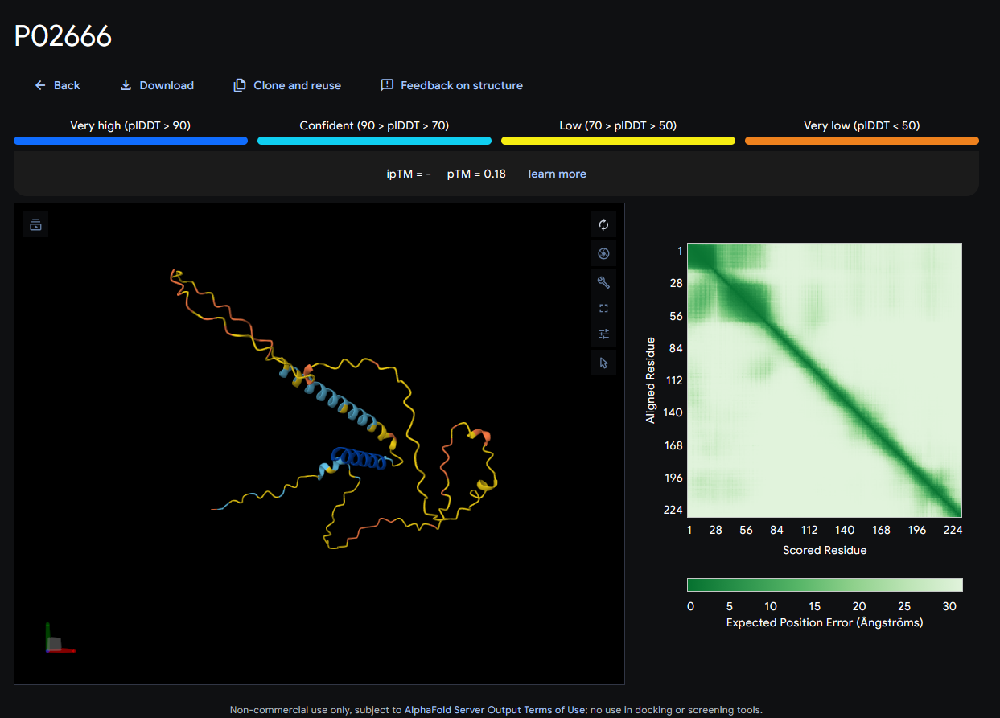

AlphaFold hands back a structure and a confidence score, but pLDDT and PAE are the network grading its own homework, not a measurement against a real answer. What GFP's one real dip and beta-casein's disorder actually show, and what the ranking formula does when a protein has no fixed shape to find.
9 min read
Proteins are not inherently good or bad. Fold correctly and they hold your
muscles together, keep your skin intact, and give your bones their strength.
Fold wrong, because of a single DNA mutation, and you get Cystic Fibrosis,
Huntington's disease, or the rigid haemoglobin rods that cause sickle cell
anaemia. The shape is the whole story, and until recently, finding it
experimentally, by X-ray crystallography, NMR, or cryo-EM, could take a PhD
student's entire career and run past $100,000 per structure. Even shifting
the search to a computer ran into Levinthal's paradox: a chain flexible
enough to have on the order of 10^43 possible shapes is too large a space to
search one configuration at a time, even given more time than the universe
has existed.
That was the situation before AlphaFold: an AI system from Google DeepMind
that predicts a protein's 3D structure from its amino acid sequence alone,
solving a fifty-year-old problem in biology and earning its creators a share
of the 2024 Nobel Prize in Chemistry.
What I actually want to write about here isn't the model. It's the report
card it hands back with every structure.

My own AlphaFold Server run on beta-casein. A structure, a color legend, two numbers, and a green grid. None of it means anything yet.
This is what AlphaFold Server gives you back: a structure colored by
confidence, a pTM score, an ipTM score, and a green-toned grid next to it.
pTM comes back 0.18. ipTM is a dash, not a number. The grid is pale almost
everywhere except a thin dark line down the middle.
Read literally, none of that tells you whether the structure is right. It
tells you what the network thinks of its own answer, and those are two
different questions. Telling them apart means knowing what each number is
actually testing.
What pLDDT actually is
lDDT, the Local Distance Difference Test, predates AlphaFold. Mariani and
colleagues introduced it in 2013 as a way to score a predicted structure
without first aligning it to the true one: for each atom, look at everything
within 15 Å in the real structure, then check whether the predicted model
keeps those same neighbors at roughly the same distances, within four
tolerance bands (0.5 Å, 1 Å, 2 Å, 4 Å). Average the pass rate across those
bands and you get a 0 to 1 score per atom for whether its immediate
neighborhood came out right. Because it never needs a global alignment step,
a wrong hinge angle between two otherwise-correct domains doesn't drag down
the score for atoms sitting inside either one.
AlphaFold's version, pLDDT, predicted Local Distance Difference Test, is the
network estimating what its own lDDT score would be if you could check it
against a real structure. It learned to make that estimate from thousands of
real structures during training, where the true answer was available. At
inference time, on a new sequence, there is no true structure to check
against. pLDDT is a self-assessment, not a measurement.
pLDDT is a self-assessment, not a measurement.
What pLDDT actually is
GFP's one real dip
Green fluorescent protein, avGFP, the original variant cloned from the
jellyfish Aequorea victoria (UniProt
P42212), is a clean place
to see this, because most of it is easy: eleven beta strands wrapped into a
barrel around a single central helix, folded the same way in every jellyfish
that makes it. Running my own sequence through AlphaFold Server gives a
pLDDT that sits in the high 90s for nearly the entire chain of 238
residuesOne amino acid unit in a protein's chain, numbered from one end to the other.,
averaging 92.8.
There's one real dip, and it lands exactly where you'd want it to. Residues
65 through 67, serine, tyrosine, glycine, drop from the high 90s down to
78.2, 70.7, and 74.9 before climbing straight back to the high 80s and 90s on
either side. That tripeptide is GFP's
chromophoreThe part of a molecule that absorbs light, here the group responsible for GFP's fluorescence.,
the three residues that fold in on themselves and undergo an internal
chemical reaction to become the light-emitting group, a rearrangement unlike
anything else in the chain. The network isn't confused about the fold there.
It's telling you, correctly, that this one spot behaves differently from the
rest of the barrel.
What PAE actually is
pLDDT asks a local question: is this one residue's immediate neighborhood
right? Predicted Aligned Error asks a relational one: if you anchor residue
i exactly in place and align the structure around it, how far off, in
Ångströms, would residue j land? That's why PAE isn't a single number per
residue but a full i by j matrix. Two domains can each be internally
solid, each with excellent pLDDT throughout, while the PAE between them
stays high, because the model has no idea how the two domains sit relative
to each other. pLDDT alone would miss that entirely.
GFP's own PAE matrix is close to uniformly dark: a mean error of 3.6 Å
across the whole grid, with 88% of it under 5 Å. That's what a single rigid
domain looks like in this kind of plot, confident not just about each
residue's own shape but about how every residue relates to every other one,
all at once.
Beta-casein, built without a fixed shape
Beta-casein is a milk protein, and it isn't malfunctioning by lacking a
fixed shape. It's built that way. Casein micelles hold together through
loose, shifting contacts between disordered chains rather than any one
protein folding into a rigid form. An intrinsically disordered protein like
this one has no single correct structure for AlphaFold to find, because
there isn't one to find.
Run it through AlphaFold Server and the numbers show exactly that.
Confidence holds for the first fifteen residues, comfortably above 90
pLDDT, dips briefly at 16 and 17, then declines for good: 83% of the chain
sits below 70, and a third sits below 50. pTM comes
back at 0.18, against GFP's 0.91. The PAE matrix mirrors it: a mean error of
27.5 Å, with only 4% of the grid under 5 Å. Where GFP's plot is a dark
square, beta-casein's is pale almost everywhere, with barely a shadow along
the diagonal.
Both are AlphaFold Server runs, colored by per-residue confidence (pLDDT), AlphaFold's own four-band scheme. GFP's beta-barrel holds together in solid blue almost end to end; beta-casein, an intrinsically disordered protein with no fixed fold to predict, comes back mostly yellow and orange. The PAE (predicted aligned error) plots below each structure show the same story from a different angle: a dark block means the model is confident about where those two residues sit relative to each other, and GFP's dark square along the diagonal is the barrel holding its own shape, where beta-casein never gets one. ipTM is reported as n/a because both are single-chain predictions; it only exists for interfaces between chains. Drag to rotate, scroll to zoom.
Rotate either one and the pattern holds from every angle: GFP's barrel keeps
its shape, solid blue except for its two floppy termini, while beta-casein's
chain never settles into anything you'd call a fold.
Under the hood: what the numbers are made of
pTM and ipTM aren't separate measurements. They're PAE, reduced to a single
number. The predicted TM-score runs each entry of the PAE matrix through the
same distance-normalizing function the original TM-score uses, then
averages the result. A tight, low PAE matrix collapses into a high pTM; a
diffuse one collapses into a low one, which is exactly why GFP lands at 0.91
and beta-casein lands at 0.18.
ipTM is the same calculation restricted to residue pairs that cross between
chains, i in one chain, j in another. GFP and beta-casein were both run
as single chains, so there's no inter-chain pair to average over, and ipTM
comes back undefined, a dash on the Server's own page, not a zero and not a
missing value. It only exists for interfaces.
AlphaFold Server also reports fraction_disordered, a third check that
doesn't ask the network what it thinks of its own confidence at all. It's
computed from the geometry of the predicted structure itself, using the kind
of classical, pre-AlphaFold criteria structural biologists have long used to
call a region disordered. And it feeds into the ranking formula in a way
that's easy to miss:
The fraction_disordered term is positive. A model that correctly
identifies a region as disordered gets rewarded for it, not punished for
failing to force a shape onto something that doesn't have one. That's a
deliberate choice: treating every low-confidence region as a failure would
push a model toward hallucinating structure into places like beta-casein's
tail just to keep its score up.
Confident, not correct
GFP's dip at its chromophore and beta-casein's disorder are both real
signals, and the network reported them accurately. But that's the catch:
pLDDT, PAE, pTM, and ipTM are all the model grading its own prediction, not
a comparison against a structure verified in a lab. They're worth trusting
as an honest self-assessment. They aren't ground truth, and treating them as
one is exactly how a confident-looking structure turns out to be wrong. The
model and confidence code, including confidences.py, is open on
GitHub.